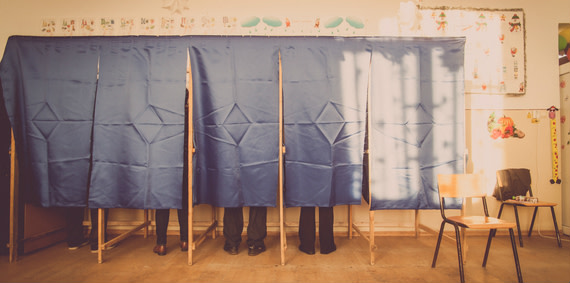

Memphis Can't Wait! Here's why!
YOUTH VOTERS ACCOUNT FOR HALF OF THE VOTING POPULATION, MAKING THEM A POWERFUL POLITICAL FORCE.
The youth vote has the potential to be extremely influential in this country. While young voter participation in
2016 declined by 2% from a record 52% at the 2008 election, today the voting population includes almost equal parts
millennials and baby boomers.

YOUTH VOTE COUNTS
While young people make up a large portion the voting-eligible population, they're much less likely than those who are older to get out and vote. In 2016,
only 19% of people aged 18-29 cast their ballot in the presidential election; at 49%, 45-64-year-olds accounted
for the largest electorate last year.
YOUNG VOTERS ARE AN INCREDIBLY DIVERSE GROUP
Currently, millennials are the most diverse voting group.So much so that the millennial electorate is
expected to be the first demographic group with the ability to challenge the basic two-party system,
potentially driving the need for alternative political parties whom millennials feel can represent the needs of a diverse
population through a more inclusive agenda.
THE YOUTH VOTE CAN SWAY THE ELECTION
So much so that the collective "youth vote" could actually sway the election. Millennials have been credited with the decisive vote in
the 2012 election of Barack Obama for a second term as president;
Obama won 67% of the national youth vote, proving more popular in crucial states such as Florida, Virginia, Pennsylvania, and Ohio,